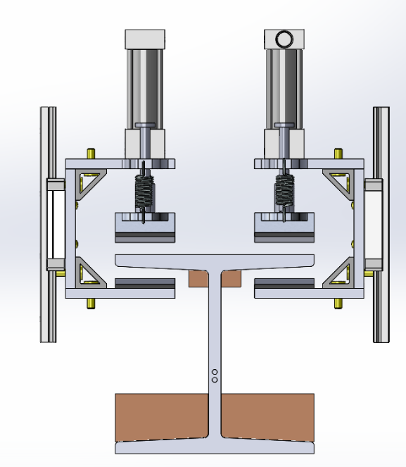
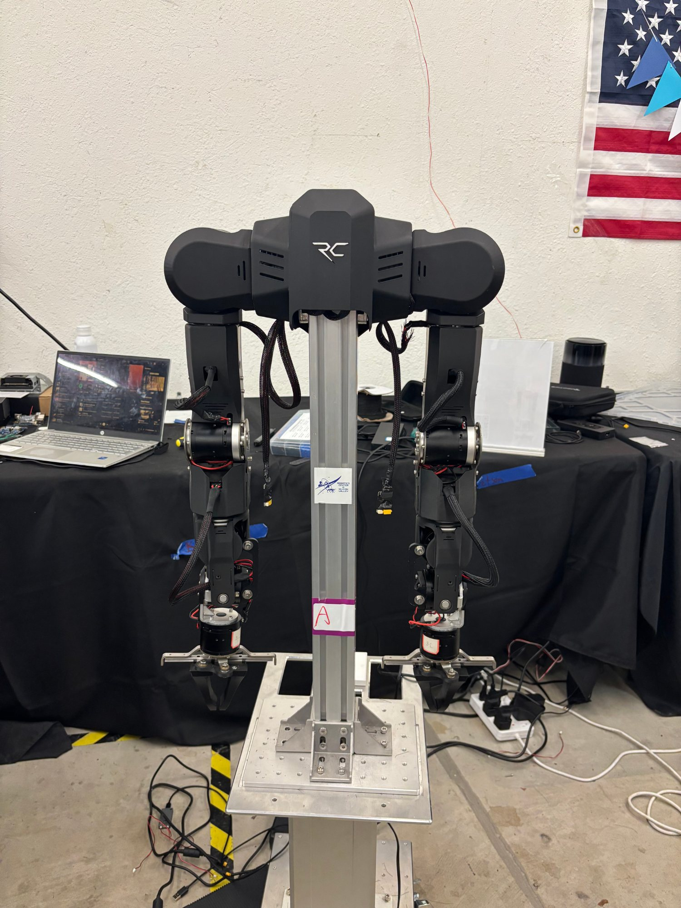
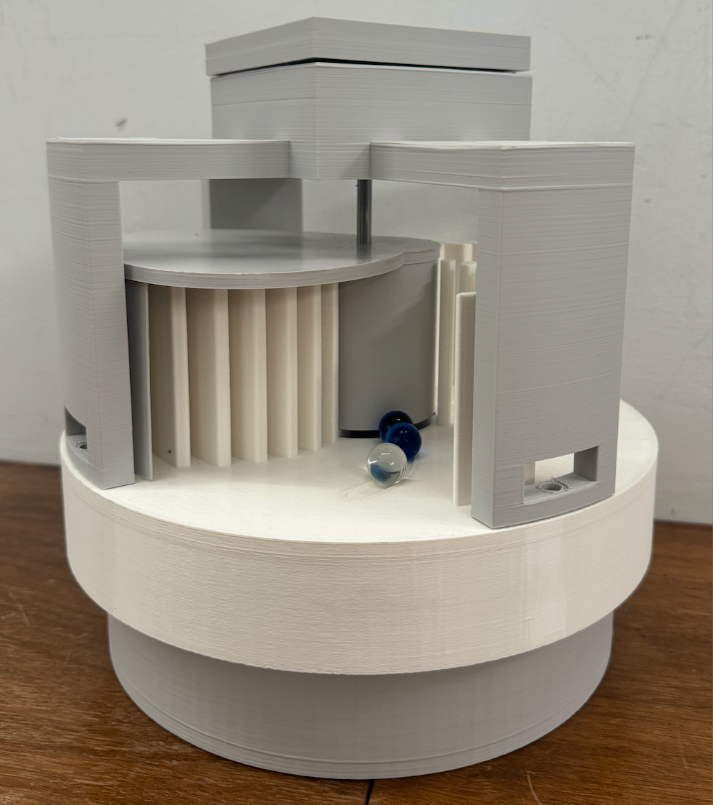

ConnorHyde
Mechanical engineer at Cornell. I design hardware, prove it with analysis, and machine it myself.
- Drawn by
- C. Hyde
- Discipline
- Mechanical engineering
- School
- Cornell University, B.S. 2028
- Current role
- Track lead and machining lead, Cornell Hyperloop
- Status
- Seeking summer 2027 internships
Results I can point to
Every number below comes from hardware I designed, built, shipped, or taught.
More braking force after pairing stronger springs with a larger actuator
Hyperloop pod brake
Less print time across 30 robot covers from an optimized bed layout
OpenArm casing
Clients, investors, and peers I demoed robots to
Robotics Center of Silicon Valley
Hours teaching students to run lathes and mills
University machine shop
Parts coordinated for a 20-person mechanical team
Hyperloop machining lead
Selected work
Four projects across hyperloop pod brakes, robot hardware, vineyard pest control, and building renovation.

A spring-applied brake that stops a 100 kg pod in under half a second
Sized springs with a MATLAB sweep, resized the actuator, and validated the bracket in Ansys at a 2.0 minimum factor of safety.
View project
A ground-up casing redesign for a bimanual robot arm
Added vents and cable management, set load cases from a MATLAB kinematics model, and cut print time 44%.
View project
A motorized trap that sweeps lanternflies into a sealed chamber
A 5 RPM reaper wall guides insects to a drop chute. All three subsystems beat their pass thresholds over 60 trials.
View project
AutoCAD takeoffs that set listings and flooring orders
Measured 14 units for listed square footage and flooring buys, and modeled a gym in 3D before build-out.
View projectI like owning a problem from sketch to finished part
A little more about me.
I'm a third-year mechanical engineering student at Cornell. On Cornell Hyperloop I'm the Track Team Lead and Machining Lead. Right now I'm researching track geometry and materials that will get our pod levitating.
I also teach students to run manual lathes and mills safely, and I certify them for independent shop use. Machining keeps my designs honest. I know what a tolerance costs because I've held it myself.
After graduation I want to work in aerospace or robotics. I'm looking for work where I carry a project through its full lifecycle and make the key calls along the way. Long term, I want to grow into a lead engineer or technical manager.